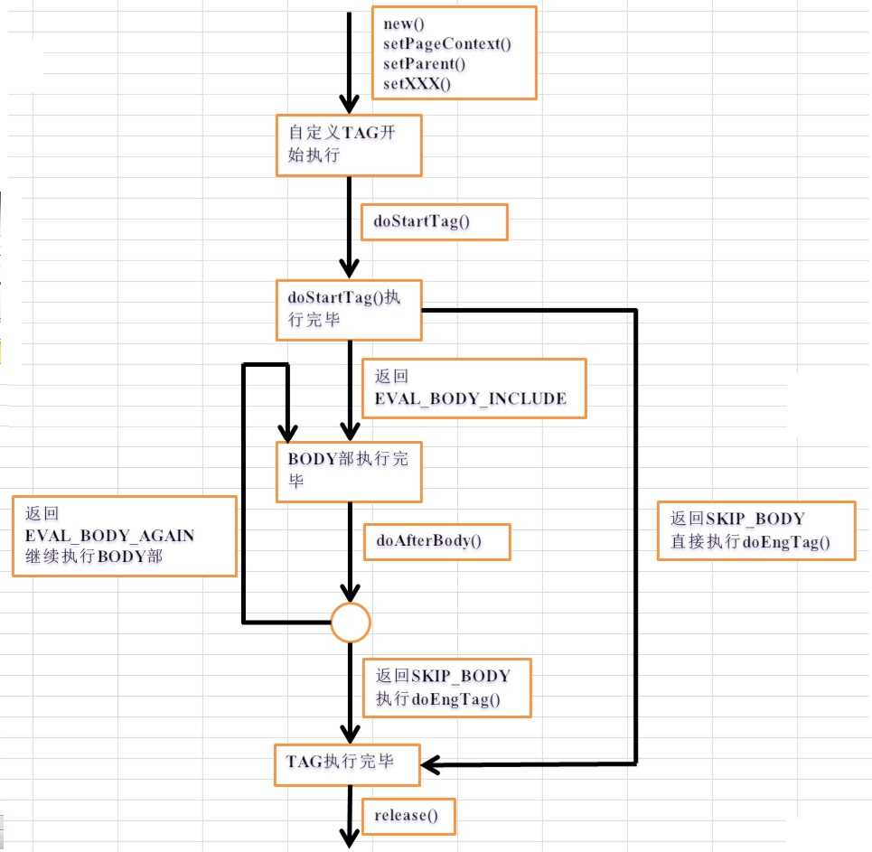

JSP简介
1、基于servlet技术以及整个Java体系的web开发技术
动态生成HTML文档的web页面模板，允许html和Java代码在同一个页面中。
2、HTML文件+Java中断+jsp标签 = JSP
3、jsp必须依附项目（站点）
一个动态站点包括WEB-INF目录，其中包含着web.xml文件
jsp和WEB-INF同级目录
4、部署JSP站点的三种方法
- 编译之后的站点直接放到webapps目录下
- 在server.xml的host结点下创建context
- 形式为：<Context path=" /myapp " docBase=" jsp应用的物理路径 " workDir=" jsp应用的工作目录" reloadable=" true " />
- 在conf / Catalina / localhost下创建一个xml文件（文件内容与server.xml中context结点内容一致）
- 当xml文件名与内部虚拟路径不一致时，以xml文件名为准
- 物理路径是编译之前的文件路径，同时物理路径要具体到webcontent
5、jsp标签
HTML标签+Java代码+jsp标签
- 伪指令标签<%@ %>
- page：指定整个页面的全局属性
- include：内嵌指定页面，将复杂页面拆分成简单的页面
- taglib：允许开发者自定义标签
- 声明标签<!% %>
- 脚本标签<% %>
- 动作标签
- 在请求处理阶段向jsp容器发送指令
- <jsp include page=" "> <jsp useBean > <jsp forwrad >
- 表达式标签
- 可用于访问可用的Java取值或其他表达式
- 还可用于给动作指令动态传递参数<jsp: include page=“<%=name%>”%>
- 注释标签
- 只在jsp中显示 <%-- --%>
- 在jsp脚本元素中的注释 /* */ //
- JSP生成的HTML在客户端显示的注释 <!-- -->
JSP基础
1、jsp工作原理
- 一个JSP文件第一次被请求时，JSP引擎将该jsp文件转换成一个Servlet
- JSP引擎使用javac将转换成的servlet的源文件编译成相应的class文件
- 对每一个请求，jsp引擎都会开启一个新的线程来处理
2、JSP生命周期
转译-编译-加载-实例化-初始化-服务-销毁
阶段 | 描述 |
转译 | 将JSP源文件转译成对应的Servlet源文件 |
编译 | 编译Java源文件为类文件 |
加载 | 将类加载至内存 |
实例化 | 创建一个Servlet类实例对象 |
初始化 | 调用_jspInit()方法，最终调用Servlet类的init()方法初始化 |
服务 | 调用_jspService()方法，最终调用Servlet类的service()方法，将请求和响应传递进对应的doXXX()方法 |
销毁 | 调用_jspDestroy()方法，最终调用destroy()方法，销毁Servlet |
3、JSP转译Servlet
标签 | 转换后 |
声明标签 | 转换为Servlet类的成员 |
脚本标签 | 转换为_jspService()中的代码 |
HTML代码 | 转换为_jspService()中out.write()中的代码 |
| 表达式标签 | 转换为_jspService()中out.write()中的代码 |
注释 | 不转换 |
伪指令 | <%@ page import=" "%>转成import ... |
动作指令 | 被底层指定的类取代 |
4、page伪指令属性
- import属性：用于描述JSP页面中使用类的全包名
- session属性：指定页面是不是需要一个http对话
- errorPage和isErrorPage属性
- <%@page errorPage="error.jsp"%>
- JSP产生一个不能捕获的溢出时跳转到一个错误页面
- <%@page isErrorPage="true" %>
- error.jsp页面需要添加此条语句才可生效
- language属性与extends属性
- buffer与autoFlush属性
- <%@page buffer=“32kb” %>指定JSP的输出缓冲区的最小值
- <%@page autoFlush =“false”%>指定当缓冲区满时，是否自动将数据发送给客户端，默认为true
- contentType和pageEncoding属性
- <%page contentType="text/html ; charset=utf-8">
- 指定页面响应的MIME类型和字符编码
- <%page pageEncoding=" utf-8 " >
- 指定JSP页面字符编码格式，默认值为ISO-8859-1
JSP基础
- JSP的九个内置对象
- out：用于向客户端输出数据。
- 作用域：page
- 方法：write() print() println()
- request：来自客户端的请求经Servlet容器处理之后，由request对象进行封装
- 作用域：request
- 方法：getParameter(key) getParameterValues(key) setCharacterEncoding("utf-8") setAttribute() getAttribute() getRequestDispatcher(" ").forward(request, response)
- response：封装了JSP的响应，之后被发送到客户端以响应客户的请求
- 作用域：page
- 方法：sendRedirect() setCharacterEncoding()
- session
- 作用域：session
- 方法：getId() invalidate() setMaxInactiveInterval() isNew()
- application
- 方法：set get remove attribute
- pageContext
- pagecontext，是page的上下文，是javax.servlet.jsp.PageContext类型，它持有request，response，也持有page，通过pagecontext可以获取servletcontext、servletconfig等，可以看出他是一个桥梁可以获取上下文变量
- config
- page
- exception
- JSP的四个作用域
- Application
- 可以通过application内置对象或ServletContext访问Application作用域对象
- Session
- 可以被同一个客户端的请求访问
- Request
- 可以被forward()方法转向页面或者include()包含页面访问
- Page
Web组件复用
1、构建可复用组件可极大的提高软件生产效率、增强系统的可维护性
2、静态包含：在jsp源文件转换成对应servlet源文件时将当前jsp和其包含的所有其他文件合并为一个Servlet文件
- 语法：<%@include file=" " %>（伪指令）
- 先放进去再编译
- 注意事项
- 包含文件中尽量不要使用html，body等会影响原JSP页面的内容
- 该指令可以放到任意位置，且只有file一个属性，只能用相对路径
- file属性中不能放入动态表达式，
- file属性中不能通过url传递参数
- 被包含文件之间可以共享变量，尽量避免文件之间的联系
3、动态包含：指客户端请求时，将请求转发给当前JSP文件包含的其他对象
- 语法：<jsp:include page=" " flush="true">（动作指令）
- 与原JSP文件独立编译、执行，彼此之间不能访问各自自定义的变量，只能访问request、session、application范围的对象
- page属性中，可以是相对路径的表达式，page属性可以是动态页面文件也可以是静态页面文件
include伪指令 | include动作指令 | |
规则 | <%@include %> | <jsp:include /> |
编译时间 | 较慢(资源必须被解析) | 较快 |
执行时间 | 较快 | 较慢(因为每次请求资源必须被解析) |
灵活性 | 较差(页面内容必须固定) | 较好(页面在运行时可动态选择) |
动作发生的时间 | 页面转换期间 | 请求期间 |
被包含的内容 | 文件的内容 | 页面的输出 |
产生Servlet数目 | 1 | n |
4、动态包含之forward动作指令
- 允许将客户请求转发到另一个资源文件，即每当遇到此动作指令就停止执行当前的JSP，转而执行被转发的指定资源
- <jsp : forward page=" ">
- forward动作指令在调用转发操作后不会继续处理指令后的任何代码，而include动作指令会继续处理
5、动态指令的参数传递
<jsp:include page="header.jsp" flush="false">
<jsp:param name="name" value="slr"/>//可以传递一个或多个参数给动态页面
</jsp:include>
6、JavaBean满足的条件
- 属性为私有，方法为公有
- 无参构造方法
<jsp:useBean id="user" class="www.onest.zzh.User"></jsp:useBean>
<jsp:setProperty property="userName" name="user" param="name"/>
<jsp:getProperty property="userName" name="user"/>
EL表达式
EL存取变量数据${user }
默认查找顺序为：page -request -session -application
指定范围${pageScope.user} ${requestScope.user}.......
如果想动态的取值 则需要使用[]
empty: 判断值是否为null或空的${ empty param.name}
EL隐含对象有11个，与JSP的9个隐含对象区分开与范围有关的 applicationScope: sessionScope: requestScope: pageScope: 与输入有关的 param: paramValues: 其他隐含对象 cookie: header: headerValues: initParam: pageContext
自定义EL函数
1、编写方法所在源文件 .java文件
public class StrLen {
public static int getLength(String str) {//必须使用public static修饰
return str.length();
}
}
2、编写标签库描述符 .tld文件
<taglib>
<tlib-version>1.0</tlib-version>
<jsp-version>2.0</jsp-version>
<function>
<name>upper</name>
<function-class>com.StrMethods</function-class>
<function-signature>java.lang.String upper(java.lang.String)
</function-signature>
</function>
<function>
<name>length</name>
<function-class>net.onest.zzh.StrLen</function-class>//对应的Java类
<function-signature>java.lang.int getLength(java.lang.String)//返回值+方法名（带包名）
</function-signature>
</function>
</taglib>
3、修改部署描述符 web.xml文件
<jsp-config>
<taglib>
<taglib-uri>/demo</taglib-uri>//对应JSP文件
<taglib-location>/WEB-INF/tag/tag.tld</taglib-location>//以webcontent为基础目录
</taglib>
</jsp-config>
4、编写JSP文件 .JSP文件
<%@ taglib prefix="str" uri="/demo" %>
${str:length("abc") }
JSP标准标签库
1、JSTL是一个实现WEB应用程序中常见的通用功能的定制标记集。功能包括迭代和条件判断、数据管理格式化、XML操作以及数据库访问。
2、JSTL主要包括的子标签库有：核心标签、XML标签、格式化标签(I18N)、SQL标签、函数标签库
3、jstl.jar 提供了标签开发接口类 standard.jar提供了标签库的实现类
4、JSP中需要通过taglib伪指令导入JSTL标签库
语法为： <%@ taglib prefix=" c " uri=" http://java.sun.com/jsp/jstl/core " %> <c : XXX>来使用
5、
JSTL | 前置名 | uri | 示例 |
核心标签库 | c | http://java.sun.com/jsp/jstl/core | <c: out> |
格式化标签库 | fmt | http://java.sun.com/jsp/jstl/fmt | <fmt: formatDate> |
SQL标签库 | sql | http://java.sun.com/jsp/jstl/sql | <sql : query> |
XML标签库 | xml | <x : foreach> | |
函数标签库 | fn | ${fn: split() } |
6、
核心标签库
- 用e接收异常内容
<c: catch var="e"> 也许会抛出异常的代码 </c: catch>
- 打印输出内容到页面 default属性表示默认输出内容
<c: out value="${count }"></c:out>
- 声明变量 设置变量值
<c:set var="num" value="${4*4}"/>
- 设置属性值
<c:set target="${user }" property="userName" value="zhangzihua"></c:set>
- 从指定作用域 内删除变量
<c:remove var="num" scope="session">
- 综合应用
//创建对象的两种方法
<%
User user = new User();
pageContext.setAttribute("user",user);
%>
<jsp:useBean id="user" class="net.onest.zzh.User" scope="page"></jsp:useBean>
//设置属性的两种方法
<c:set target="${user}" property="userName" value="zhangzihua"></c:set>
<jsp:setProperty name="user" property="userName" value="zhangzihua"></jsp:setProperty>
//输出属性的两种方法
<jsp:getProperty name="user" property="userName"></jsp:getProperty>
<c:out value="${user.userName}">
- c : if 没有else语句
<c:if test="${user.sex=='0' }">男</c:if>
- <c: choose>语句与<c:when> <c: otherwise>并用
<c:choose>
<c:when test="${true }">1<c:when>
<c:otherwise>2</c:otherwise>
</c:choose>
- <c:forEach>的两个用法
<c:forEach items="${users }" begin="0" end="2" var="user" varStatus="vs">//begin,end都是索引，前后都包括
${vs.index }索引
${vs.count }当前第几个
${vs.first }是否为第一个
${vs.last }是否为最后一个
//varStatus属性，用来存放现在指到的成员的信息。
${user.userName }----${user.password }---
<c:if test="${user.sex=='0' }">男</c:if>
<c:if test="${user.sex=='1' }">女</c:if>
</c:forEach>
<c:forEach begin="1" end="10" step="3" var="i">//begin表示从第几个开始，step表示隔几个，end为第几个
<c:out value="${i }"></c:out>
</c:forEach>
- <c:url>用来产生一个URL，“/”表示上下文路径
- <c:import>可以把其他静态或动态文件包含至本身JSP页面。与JSP动作<jsp:include>的不同在于<c:import>可以包含位于Web程序之外的资源
- <c:redirect>用于把客户请求重定向到另一个资源
格式标签库
<!-- 数字的格式化 -->
<fmt:formatNumber maxFractionDigits="2" maxIntegerDigits="2" type="currency" currencySymbol="$">1231313.333531</fmt:formatNumber>
<!-- 日期的格式化 -->
<% Date date = new Date();
pageContext.setAttribute("date", date);
%>
${date }
<fmt:formatDate value="${date }" pattern="yyyy-MM-dd"/>
函数标签库：JSTL包含一系列标准函数，大部分是通用的字符串处理函数。

自定义标签
1、自定义标签的原因：实现代码复用
2、空标签体的定制标签，带属性的定制标签体，带标签体的简单标签
3、简单标签：提供了SimpleTag接口和SimpleTagSupport实现类
- 编写简单标签实现类
public class EmptyTagBody extends SimpleTagSupport{
@Override
public void doTag() throws JspException, IOException {
// TODO Auto-generated method stub
super.doTag();
getJspContext().getOut().print("simple tag!");
}
}
public class AttributeTag extends SimpleTagSupport{
private int count;属性+set方法
@Override
public void doTag() throws JspException, IOException {
// TODO Auto-generated method stub
getJspContext().getOut().print("hello attribute" + count);
}
public void setCount(int count) {
this.count = count;
}
}
public class BodyTag extends SimpleTagSupport{
@Override
public void doTag() throws JspException, IOException {
//getJspContext().getOut().print("zhangzihua");
getJspBody().invoke(null);
}
}
- 编写TLD文件
<taglib>
<tlib-version>1.0</tlib-version>
<jsp-version>2.0</jsp-version>
空标签体
<tag>
<name>emptyTag</name>标签名字
<tag-class>net.onest.zzh.EmptyTagBody.EmptyTagBody</tag-class>标签的全限定名
<body-content>empty</body-content>没有标签体
<description>empty tag test</description>可选
</tag>
带属性的标签体
<tag>
<name>attribute</name>
<tag-class>net.onest.zzh.EmptyTagBody.AttributeTag</tag-class>
<body-content>empty</body-content>
<attribute>
<name>count</name>属性名
<required>true</required>是否需要
<type>int</type>返回值
</attribute>
<description>
Send a math expression to the JSP
</description>
</tag>
带标签体的
<tag>
<name>body</name>
<tag-class>net.onest.zzh.EmptyTagBody.BodyTag</tag-class>
<body-content>scriptless</body-content>标签体
</tag>
</taglib>
 empt：表示没有标签体
empt：表示没有标签体 JSP：表示标签体可以包含JSP代码
JSP：表示标签体可以包含JSP代码 scriptless：表示标签体可以包含EL表达式和JSP动作元素，但不能包含JSP的脚本元素
scriptless：表示标签体可以包含EL表达式和JSP动作元素，但不能包含JSP的脚本元素 tagdependent：表示标签体交由标签本身去解析处理。即在标签体中所写的任何代码都会原封不动地传给标签处理器
tagdependent：表示标签体交由标签本身去解析处理。即在标签体中所写的任何代码都会原封不动地传给标签处理器- 在web.xml中配置TLD文件
<jsp-config>
<taglib>
<taglib-uri>/taglib</taglib-uri>与JSP页面对应
<taglib-location>/WEB-INF/tag/tag.tld</taglib-location>tld文件的路径
</taglib>
</jsp-config>
- 在JSP页面中使用taglib
<%@ taglib prefix="t" uri="/taglib"%>
<t:emptyTag/>
<t:attribute count="5"/>
<t:body>爱好</t:body>
4、IterationTag

5、BodyTagSupport和TagSupport的区别
TagSupport与BodyTagSupport的区别主要是标签处理类是否需要与标签体交互，如果不需要交互的就用TagSupport，否则就用BodyTagSupport。
交互就是标签处理类是否要读取标签体的内容和改变标签体返回的内容。
用TagSupport实现的标签，都可以用BodyTagSupport来实现，因为BodyTagSupport继承了TagSupport